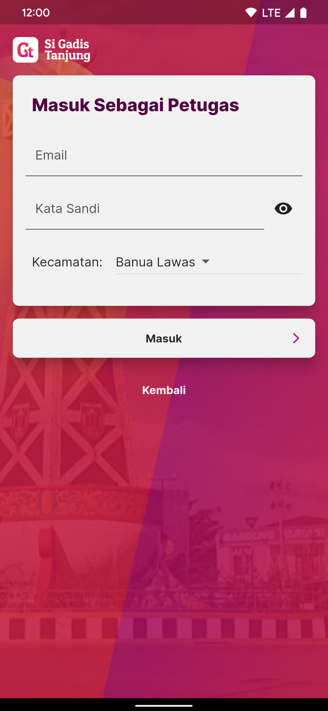
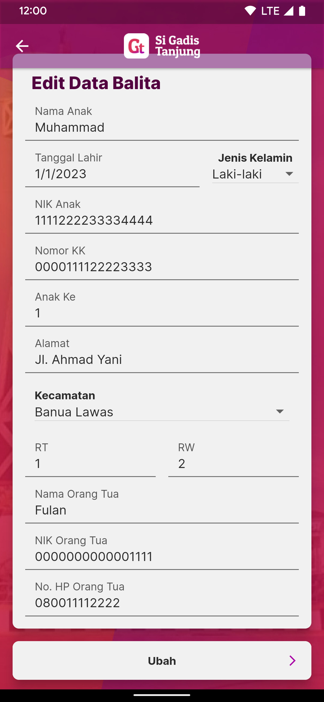

Manual Book Si Gadis Tanjung
Untuk versi terbaru dari manual book ini silakan kunjungi Website Manual Book Si Gadis Tanjung.
Penggunaan untuk Masyarakat Umum
Memilih Pengguna
- Buka aplikasi
Si Gadis Tanjung. - Aplikasi akan menampilkan tiga pilihan pengguna.
- Tekan tombol
Tamu. -
Anda akan melanjutkan penggunaan aplikasi sebagai pengguna Masyarakat Umum.
Memilih Bahasa
- Setelah memilih tipe pengguna, aplikasi akan menampilkan pilian bahasa.
- Aplikasi akan menampilkan tiga pilihan bahasa:
Bahasa Banjar,Bahasa Dayak,Bahasa Indonesia. - Tekan tombol bahasa yang anda inginkan.
-
Anda akan melanjutkan penggunaan aplikasi dengan bahasa yang anda pilih.
Mengganti Bahasa
- Tekan tombol yang bergambar
bola duniapada pojok kanan atas aplikasi. - Aplikasi akan menampilkan tiga pilihan bahasa:
Bahasa Banjar,Bahasa Dayak,Bahasa Indonesia. - Tekan tombol bahasa yang anda inginkan.
-
Anda akan melanjutkan penggunaan aplikasi dengan bahasa yang anda pilih.
Membuka Fitur KIE Artikel dan Resep
- Pada tampilan layar utama aplikasi, geser layar aplikasi.
- Pilih konten artikel atau resep yang anda akan baca.
- Aplikasi akan menampilkan artikel atau resep yang anda pilih.
-
Khusus untuk artikel, aplikasi juga akan memutar suara dub. Tekan tombol
PlayatauPausepada pojok kanan bawah aplikasi untuk melanjutkan memutar atau menghentikan suara.
Membuka Fitur KIE Video Eksternal
- Pada tampilan layar utama aplikasi, geser layar aplikasi.
- Pilih thumbnail video yang akan anda tonton.
-
Aplikasi akan membuka peramban atau aplikasi eksternal untuk memutar video.
Memeriksa Statistik
- Pilih tombol
Statistikpada halaman utama aplikasi. -
Aplikasi akan menampilkan prevalensi statistik tiap kecamatan
Menghitung Status Gizi Anak (Kalkulator Gizi)
- Pilih tombol
Kalkulator Gizipada halaman utama aplikasi. - Isi formulir informasi umum anak yang meliputi
Nama Anak,Jenis KelamindanTanggal Lahir, lalu tekan tombolBerikutnya. - Isi formulir pengukuran anak yang meliputi
Tanggal Ukur,Berat Badan,Panjang/Tinggi Anak. Tekan kotak centangDiukur hari inijika pengukuran dilakukan pada hari yang sama. Lalu tekan tombolPeriksa Status Gizi. -
Aplikasi akan menampilkan hasil perhitungan status gizi anak, dekripsi dan saran.
Memeriksa Status Perkembangan Anak (SDIDTK)
- Pilih tombol
SDIDTKpada halaman utama aplikasi. - Pilih umur anak yang sesuai pada tombol
Umur xx - xx bulan - Jawab pertanyaan kuesioner dengan menekan tombol
YaatauTidaksesuai keadaan anak. Jawab pertanyaan kuesioner sampai selesai. -
Jika kuesioner telah selesai, aplikasi akan menampilkan status perkembangan anak dan saran.
Berganti Pengguna
- Tekan tombol yang bergambar
Avatar dalam Lingkaranpada pojok kanan atas aplikasi. - Aplikasi akan menampilkan tiga pilihan pengguna.
- Tekan tombol tipe pengguna yang sesuai dengan pengguna baru.
-
Anda akan melanjutkan penggunaan aplikasi dengan tipe pengguna yang anda pilih.
Penggunaan untuk Orang Tua
Memilih Pengguna
- Buka aplikasi
Si Gadis Tanjung. - Aplikasi akan menampilkan tiga pilihan pengguna.
- Tekan tombol
Orang Tua. -
Anda akan melanjutkan penggunaan aplikasi sebagai pengguna Masyarakat Umum.
Memilih Bahasa
- Setelah memilih tipe pengguna, aplikasi akan menampilkan pilian bahasa.
- Aplikasi akan menampilkan tiga pilihan bahasa:
Bahasa Banjar,Bahasa Dayak,Bahasa Indonesia. - Tekan tombol bahasa yang anda inginkan.
-
Anda akan melanjutkan penggunaan aplikasi dengan bahasa yang anda pilih.
Mengganti Bahasa
- Tekan tombol yang bergambar
bola duniapada pojok kanan atas aplikasi. - Aplikasi akan menampilkan tiga pilihan bahasa:
Bahasa Banjar,Bahasa Dayak,Bahasa Indonesia. - Tekan tombol bahasa yang anda inginkan.
-
Anda akan melanjutkan penggunaan aplikasi dengan bahasa yang anda pilih.
Membuka Fitur KIE Artikel dan Resep
- Pada tampilan layar utama aplikasi, geser layar aplikasi.
- Pilih konten artikel atau resep yang anda akan baca.
- Aplikasi akan menampilkan artikel atau resep yang anda pilih.
-
Khusus untuk artikel, aplikasi juga akan memutar suara dub. Tekan tombol
PlayatauPausepada pojok kanan bawah aplikasi untuk melanjutkan memutar atau menghentikan suara.
Membuka Fitur KIE Video Eksternal
- Pada tampilan layar utama aplikasi, geser layar aplikasi.
- Pilih thumbnail video yang akan anda tonton.
-
Aplikasi akan membuka peramban atau aplikasi eksternal untuk memutar video.
Memeriksa Statistik
- Pilih tombol
Statistikpada halaman utama aplikasi. -
Aplikasi akan menampilkan prevalensi statistik tiap kecamatan
Menghitung Status Gizi Anak (Kalkulator Gizi)
- Pilih tombol
Kalkulator Gizipada halaman utama aplikasi. - Isi formulir informasi umum anak yang meliputi
Nama Anak,Jenis KelamindanTanggal Lahir, lalu tekan tombolBerikutnya. - Isi formulir pengukuran anak yang meliputi
Tanggal Ukur,Berat Badan,Panjang/Tinggi Anak. Tekan kotak centangDiukur hari inijika pengukuran dilakukan pada hari yang sama. Lalu tekan tombolPeriksa Status Gizi. -
Aplikasi akan menampilkan hasil perhitungan status gizi anak, dekripsi dan saran.
Menyimpan Hasil Perhitungan Status Gizi
- Pada hasil perhitungan status gizi anak, tekan tombol
Simpan. - Isi fomulir informasi identitas anak dan orang tua.
-
Tekan tombol
Simpanuntuk menyimpan hasil perhitungan status gizi anak.
Memeriksa Status Perkembangan Anak (SDIDTK)
- Pilih tombol
SDIDTKpada halaman utama aplikasi. - Pilih umur anak yang sesuai pada tombol
Umur xx - xx bulan - Jawab pertanyaan kuesioner dengan menekan tombol
YaatauTidaksesuai keadaan anak. Jawab pertanyaan kuesioner sampai selesai. -
Jika kuesioner telah selesai, aplikasi akan menampilkan status perkembangan anak dan saran.
Melihat Hasil Perhitungan yang Tersimpan
- Pilih tombol
Data Anak Sayapada halaman utama aplikasi. -
Pilih satu dari daftar data perhitungan anak yang tersimpan untuk melihat detail.
Berganti Pengguna
- Tekan tombol yang bergambar
Avatar dalam Lingkaranpada pojok kanan atas aplikasi. - Aplikasi akan menampilkan tiga pilihan pengguna.
- Tekan tombol tipe pengguna yang sesuai dengan pengguna baru.
-
Anda akan melanjutkan penggunaan aplikasi dengan tipe pengguna yang anda pilih.
Penggunaan untuk Petugas Kesehatan
Masuk Sebagai Petugas
- Pada halaman pemilihan pengguna, tekan tombol
Petugas. - Masukkan detail kredensial
EmaildanKata Sandi, dan pilihKecamatanyang sesuai. - Tekan tombol
Masuk. -
Aplikasi akan melanjutkan penggunaan aplikasi sebagai pengguna
Petugas Kesehatan.
Memverifikasi Data Perhitungan yang Masuk
- Pilih tombol
Pendataanpada halaman utama aplikasi. - Tekan
Data Masuk. -
Pilih salah satu data perhitungan dari
Kalkulator Giziyang masuk dari penggunaOrang Tua. -
Tekan tombol
Verifikasiuntuk memverifikasi data yang masuk ke data balita atau tombolTolak/Arsipuntuk menolak hasil perhitungan dan mengarsipkan data tersebut. -
Tekan tombol
Editjika ingin mengubah data sebelum memverifikasi. -
Edit kolom data yang diperlukan, tekan tombol
Ubahjika telah selesai. Selanjutnya tekan tombolVerifikasiuntuk memverifikasi data yang telah berubah.
Menambah Data Balita
- Pilih tombol
Pendataanpada halaman utama aplikasi. -
Tekan
Data Balita. -
Tekan
Tambah Data Balita. - Isi formulir penambahan data balita yang baru.
-
Tekan tombol
Tambahkan Balitauntuk menampilkan hasil perhitungan status gizi. -
Aplikasi akan menampilkan data dan hasil perhitungan status gizi balita yang telah di input.
-
Tekan tombol
Simpanuntuk menyimpan data balita yang baru.
Mengelola Data Balita
- Pilih tombol
Pendataanpada halaman utama aplikasi. -
Tekan
Data Balita. -
Tekan kolom
Cari Balita Berdasarkan Nama..., dan ketik nama balita yang ingin dicari. -
Pilih salah satu balita dari daftar balita yang ditampilkan.
-
Untuk mengedit, tekan tombol
Pensilpada pojok kanan atas aplikasi. -
Edit data balita pada formulir yang ditampilkan, tekan tombol
Ubahjika ingin menyimpan hasil perubahan data.
-
Untuk menghapus, tekan tombol
Tong Sampahpada pojok kanan atas aplikasi. -
Tekan
Yauntuk mengkonfirmasi penghapusan data balita.
Menambah Data Pengukuran Balita
- Pilih salah satu balita yang ingin ditambahkan pengukurannya.
-
Tekan tombol
Tambah Pengukuran. -
Isi formulir pengukuran dan tekan tombol
Periksa Status Giziuntuk menghitung data pengukuran. -
Aplikasi akan menampilkan hasil perhitungan pengukuran. Tekan tombol
Simpanuntuk menyimpan pengukuran.
Mengeola Data Pengukuran Balita
- Pilih salah satu balita yang ingin ditambahkan pengukurannya.
-
Pilih pengukuran yang ditampilkan.
-
Untuk mengedit, tekan tombol
Edit. -
Edit data pengukuran yang ditampilkan, tekan tombol
Simpanuntuk menyimpan hasil pengukuran. -
Untuk menghapus, tekan tombol
Hapus. -
Tekan tombol
Yauntuk mengkonfirmasi penghapusan data pengukuran.
Mengekspor Data
- Pilih tombol
Pendataanpada halaman utama aplikasi. -
Tekan tombol
Ekspor Data. -
Pilih tombol
Ekspor Data Balitauntuk mengekspor data balita. - Pilih tombol
Ekspor Data Pengukuran Balitauntuk mengekspor data pengukuran balita. -
Aplikasi akan mengunduh berkas
xlsxyang kompatibel dengan e-PPBGM.